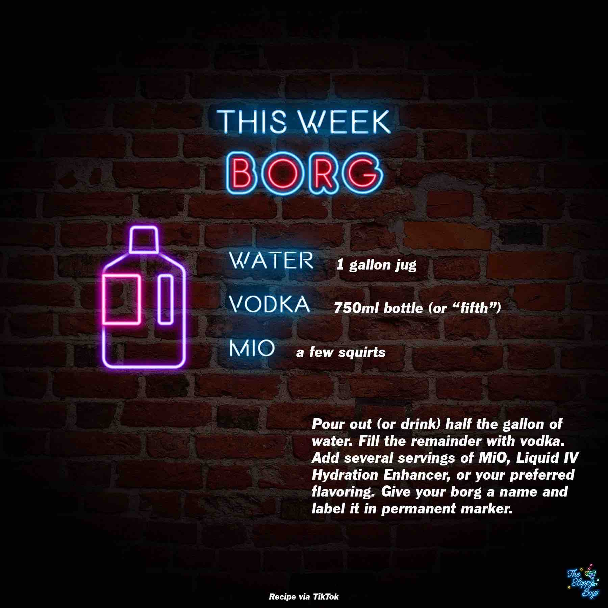

BORG
Ingredients
- Water (1 gallon jug)
- Vodka Juice (750ml bottle)
- MiO (a few squirts)
Steps
- Pour out (or drink) half the gallon of water.
- Fill the remainder with vodka.
- Add several servings of MiO, Liquid IV Hydration Enhancer, or your preferred flavoring.
- Give your borg a name and label it in permanent marker.
Notes